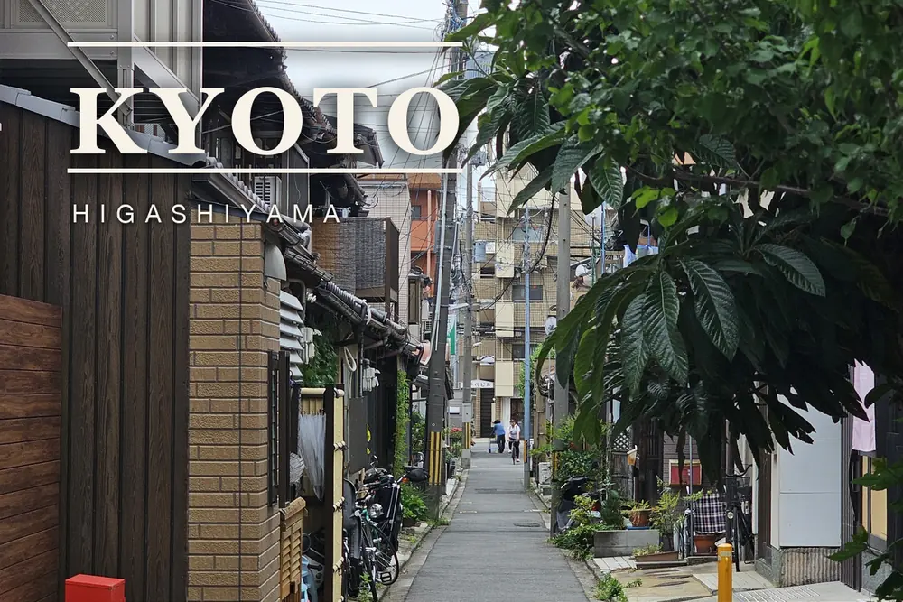
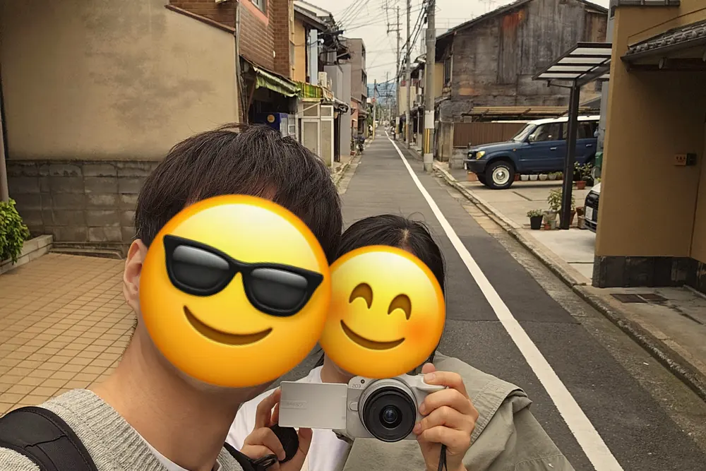
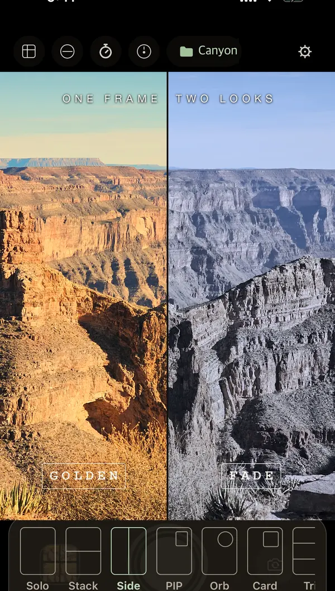
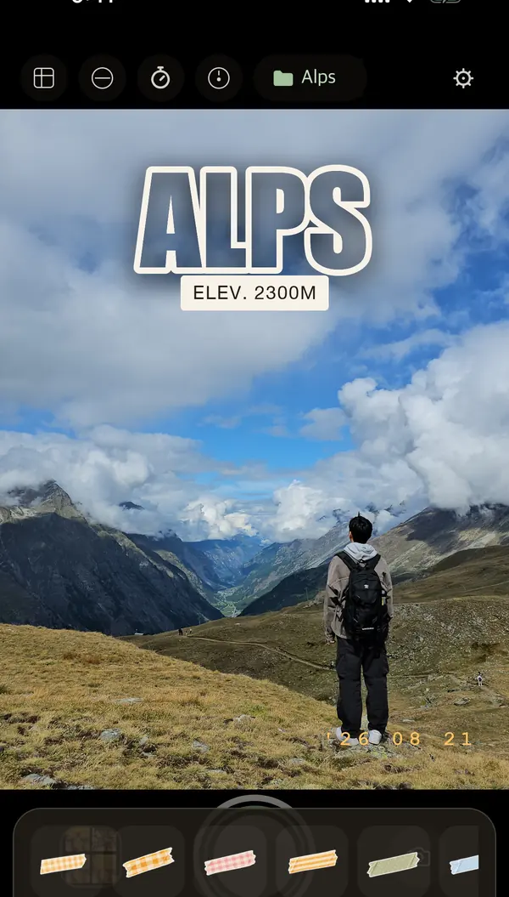
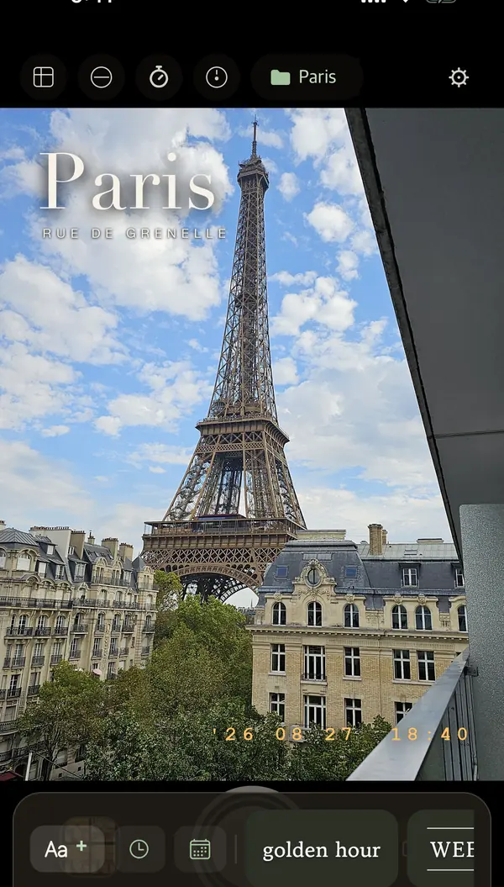
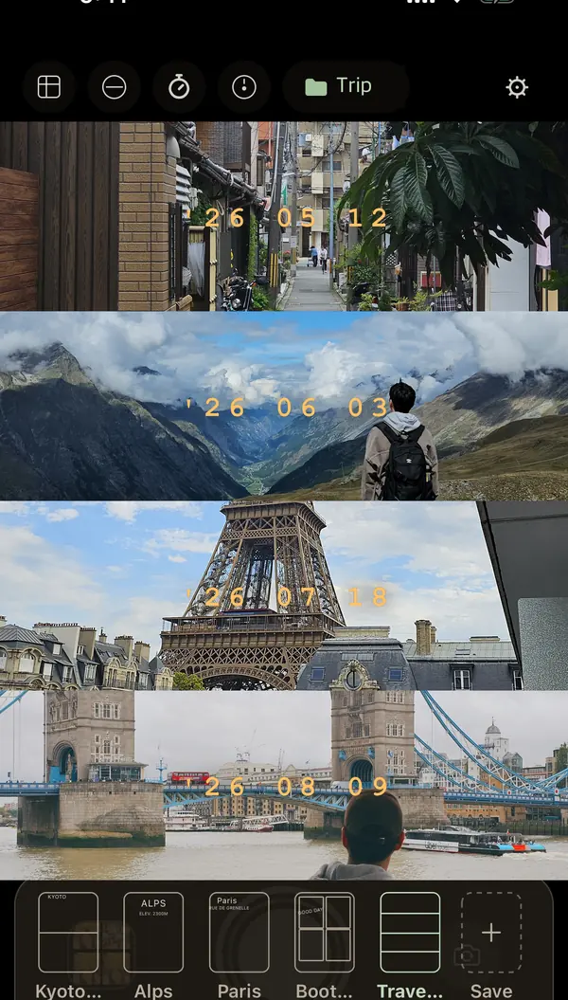
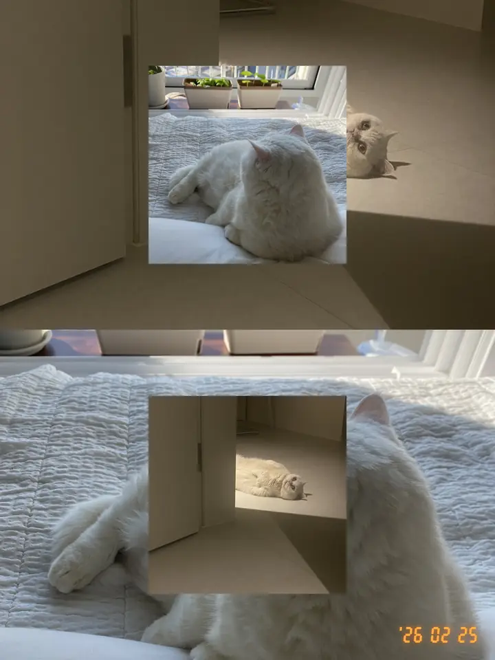

Everyone's
in the shot.
Front and back cameras fire at the same moment and save one photo.

Back camera · the view
Front camera · who's shootingFree · No account · iPhone
Pick the frame and filter before you shoot.
What you see on screen is what gets saved.

A filter for each cell
Give the left and right sides different looks.

Stickers
Put them where you want before you shoot.

Text and date
Add a caption. The date goes in the corner like on old film.

Save what you like
Keep a setup you use often and bring it back in one tap.
Or build your own frame.
Draw the cells, then put the front and back cameras wherever you want. You still press the shutter once.

A real photo taken this way. The back camera got the cat on the floor, the front camera got the cat on the bed.
What else you should know
- No accountOpen it and shoot. There's nothing to sign up for.
- Your photos don't get uploadedThey're saved on your iPhone and nowhere else.
- Video from both sidesUp to 30 seconds, with your stickers and text in it.
- Silent shutterFor a sleeping baby or a quiet gallery. Quality drops a little in this mode.
Which iPhones work?
Both cameras fire together on iPhone XS, XR and later. Older models shoot one side right after the other. You need iOS 15.1 or later.
Is it free?
Yes. There is a limit on how many of your own frames and stickers you can keep.